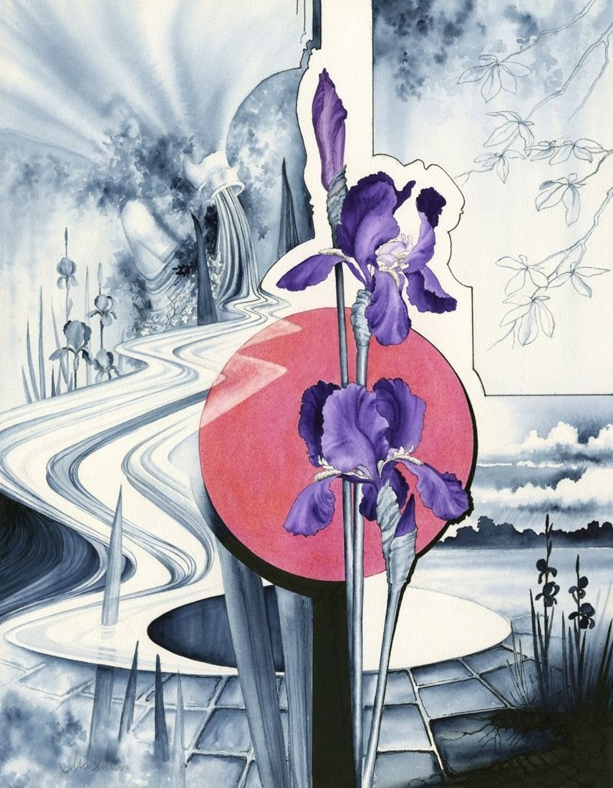

Select the picture to see it larger.
On a wall

Shown in a typical mount and frame, which are not included. The painting itself is 52 × 39 cm. Above a cabinet about 90 cm wide. The room is an illustration.
The Pink Moon
- Medium
- Watercolour on paper
- Size
- 52 × 39 cm
- Year
- 1990s
- Price
- £300
- Catalogue no.
- 74
This is a vision of a garden, starting with the iris, the moon, then the shape of a statue pouring water. The images repeat at points around the painting.
Ask about this paintingUK only. Collection from Nantwich is free; UK postage is quoted when you enquire. How buying works